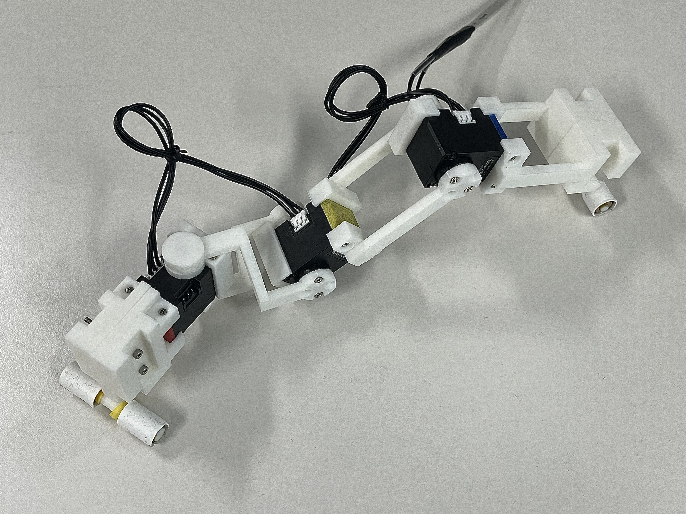
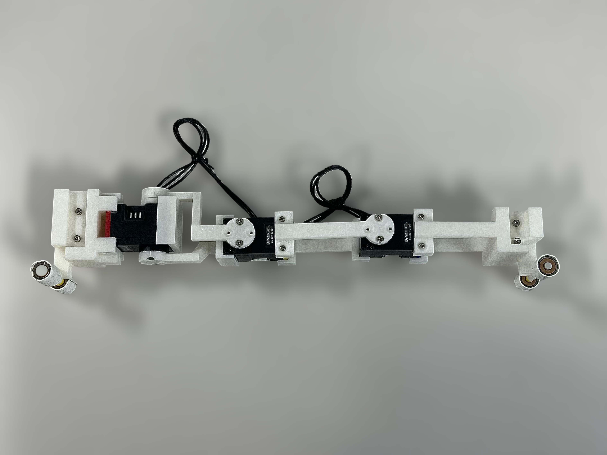

Inchworm-Inspired Locomotion Prototype
A compact hands-on prototype built to explore simple crawling locomotion using an inchworm-like body motion. This page is intended as a brief demonstration of mechanism prototyping and locomotion-hardware experience.
Overview
This small prototype was built as an exploratory mechanism exercise for crawling locomotion. Inspired by inchworm-like motion, the robot uses a compact body structure that changes shape to generate forward movement. The project served as a quick hardware test for mechanical layout, actuation packaging, contact behavior, and basic locomotion feasibility.
Although this is not a full research project, it reflects my broader interest in translating mechanical concepts into working robotic prototypes and evaluating whether simple mechanism ideas can survive real-world fabrication and testing constraints.
Prototype Figures

Moving configuration. The prototype changes its body shape to generate inchworm-like crawling motion.

Side view. Resting configuration of the prototype, showing the compact mechanical layout and contact geometry.